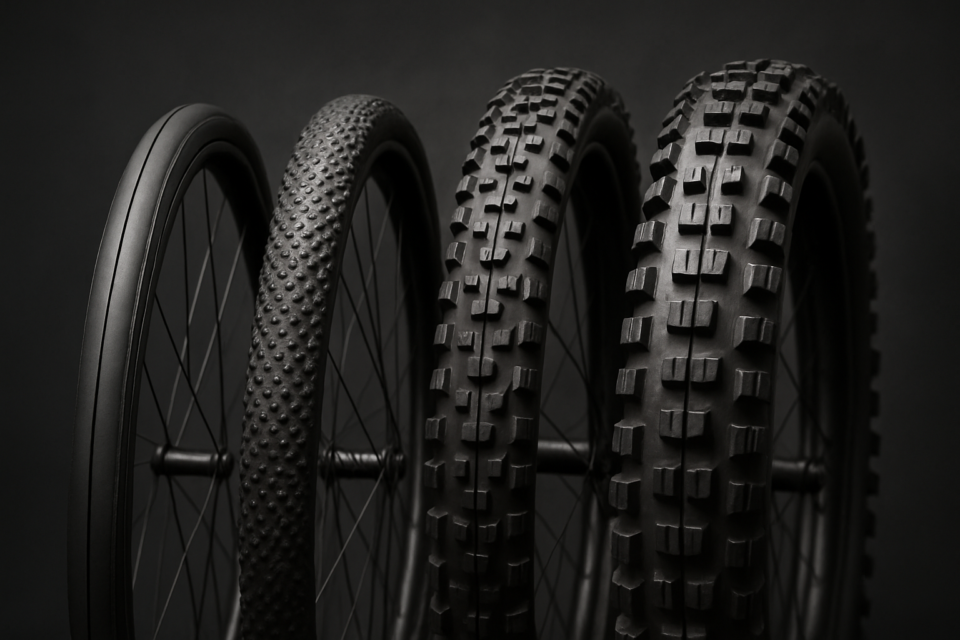

23 – 32 mm
Leggerezza, scorrevolezza, mescole morbide per il grip in curva
35 – 50 mm
Versatilità: scorrevoli su asfalto, capaci su sterrato e ghiaia
2.4 – 2.6"
Carcasse rinforzate, mescole morbide, peso secondario
Pneumatici da strada
Nel ciclismo su strada la scelta delle coperture influenza in modo diretto velocità e comfort. La larghezza varia da 23 a 32 mm. Oggi 28 mm è spesso lo standard per chi cerca il giusto compromesso, ma nuovi studi sull'aerodinamica dimostrano che la larghezza andrebbe scelta in base alla dimensione esterna del cerchio per creare un perfetto accoppiamento tra la spalla dello pneumatico e quella del cerchio.
Una maggiore impronta a terra non compromette la velocità. Basti pensare alle pressioni limitate degli pneumatici hookless. Ogni grammo in meno su una ruota conta: pneumatici leggeri diminuiscono il peso sulle masse volaniche, migliorando reattività e accelerazione.
Carcassa e TPI
Il TPI (Threads Per Inch) più alto rende la carcassa più flessibile. Pneumatici da 120 TPI in su sono più performanti ma meno protetti contro le forature. I materiali: cotone per i più performanti e leggeri, Nylon per maggior resistenza.
Mescola
Mescole più morbide garantiscono più grip, soprattutto in curva e sul bagnato, ma si consumano più velocemente. Mescole dure durano di più e scorrono meglio, ma offrono meno sicurezza in condizioni variabili. Attenzione agli pneumatici da allenamento: costano meno ma la durata è inferiore.
Pneumatici gravel
Nel gravel la versatilità è fondamentale: gli pneumatici devono essere scorrevoli su asfalto ma capaci di affrontare terreni sconnessi, ghiaia, fango e trail leggeri. Non esistono pneumatici perfetti per questa disciplina: ogni ciclista la interpreta a modo suo.
Battistrada
Tasselli centrali bassi e spalle più aggressive sono ideali per uso misto con buona percentuale su asfalto: riducono l'usura e lo sforzo necessario. Per uso più race si trovano copertoni con derivazione XC, solitamente dai 45 mm.
Tubeless
È lo standard nel gravel. Permette pressioni più basse, migliora comfort e trazione, riduce il rischio di forature da pizzicatura. Se si taglia il copertone e il vermicello non basta, bisogna saper usare rinforzo e camera d'aria, specialmente in viaggio.
Pneumatici enduro e all mountain
In enduro e DH lo pneumatico è parte attiva nella guida: deve garantire tenuta in frenata, aderenza laterale, protezione e assorbimento degli urti.
Carcassa
Spesso si usano carcasse doppio strato (EXO+, Super Gravity, Double Down, Enduro): più pesanti, ma molto resistenti. Carcasse rinforzate sul fianco prevengono tagli e stallonamenti in curva.
Mescola
Mescole morbide per l'anteriore per massima aderenza. Al posteriore si può optare per una mescola più dura per allungare la durata. Alcuni pneumatici usano mescole differenziate in base alla posizione del tassello.
Un buon pneumatico enduro può superare i 1000 g. È il prezzo da pagare per la sicurezza in discesa. Se fai giri molto pedalati e meno discesa tecnica, puoi valutare soluzioni più leggere.
Una nota sulle pressioni e le sospensioni
Fino a quanto è necessario scendere di pressione per ottenere più grip? Una carcassa doppia può pesare anche 400 g in più rispetto a una trail, il che va a discapito di accelerazione e decelerazione della ruota. L'assorbimento delle piccole vibrazioni cercalo nelle sospensioni, non nella pressione degli pneumatici. Forcella e mono sempre revisionati e ben tarati ti consentono di girare a pressioni più alte, con meno pizzicature e meno soldi spesi in inserti.
A che pressione gonfiarli?
Non esistono valori universali: ogni ciclista deve trovare la pressione adatta al proprio feeling, al peso e alla disciplina. Come punto di partenza, Vittoria ha sviluppato un algoritmo in grado di suggerire la pressione adeguata per qualsiasi categoria di pneumatico, disponibile sul loro sito e come app.
Vuoi un consiglio sulla gomma giusta per la tua bici?
Passa da DPLab: troviamo insieme lo pneumatico adatto al tuo stile, e se serve lo montiamo e configuriamo tubeless in officina.